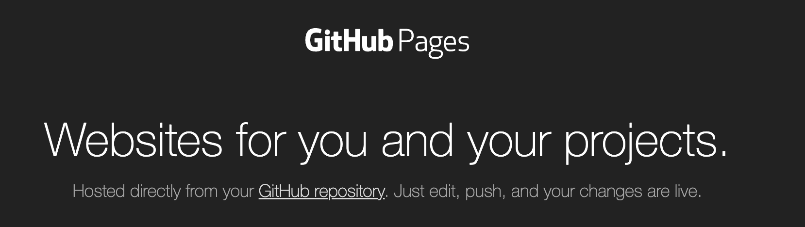

GitHub Pages
https://pages.github.com/
Publish your built book online with GitHub Pages
- Next, we have to host the build artifact of our book online, although we don’t want them on the
main branch
- The build artifacts are needed for rendering the book as a website
- The easiest way is to use the
ghp-import package
ghp-import is a lightweight Python package that makes it easy to push HTML content to a GitHub repository
We’ll learn how to use ghp-import in the next few slides.